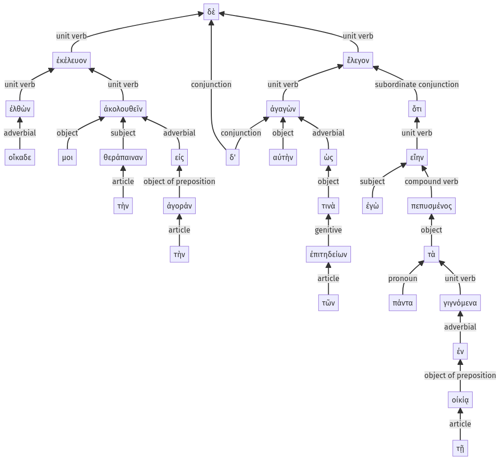

Lysias, Oration 1, 1.18.1-1.18.29a
1.17.53-1.17.63a | 1.18.29b-1.18.62a
Sentence 45
1.18.1-1.18.29a
ἐλθὼν δὲ οἴκαδε ἐκέλευον ἀκολουθεῖν μοι τὴν θεράπαιναν εἰς τὴν ἀγοράν, ἀγαγὼν δ' αὐτὴν ὡς τῶν ἐπιτηδείων τινὰ ἔλεγον ὅτι ἐγὼ πάντα εἴην πεπυσμένος τὰ γιγνόμενα ἐν τῇ οἰκίᾳ:
2 ἐλθὼν οἴκαδε
1 ἐκέλευον
3 ἀκολουθεῖν μοι τὴν θεράπαιναν εἰς τὴν ἀγοράν
2 ἀγαγὼν δ' αὐτὴν ὡς τῶν ἐπιτηδείων τινὰ
1 ἔλεγον
2 ὅτι ἐγὼ πάντα εἴην πεπυσμένος
3 τὰ γιγνόμενα ἐν τῇ οἰκίᾳ
ἐλθὼν δὲ οἴκαδε ἐκέλευον ἀκολουθεῖν μοι τὴν θεράπαιναν εἰς τὴν ἀγοράν, ἀγαγὼν δ' αὐτὴν ὡς τῶν ἐπιτηδείων τινὰ ἔλεγον ὅτι ἐγὼ πάντα εἴην πεπυσμένος τὰ γιγνόμενα ἐν τῇ οἰκίᾳ:
Highlighting:
- connecting words
- unit verb
- subject
- object
Color code:
- Independent clause (level 1, transitive verb)
- circumstantial participle (level 2, intransitive verb)
- indirect statement with infinitive (level 3, transitive verb)
- independent clause (level 1, transitive verb)
- circumstantial participle (level 2, transitive verb)
- subordinate clause (level 2, transitive verb)
- attributive participle (level 3, intransitive verb)
